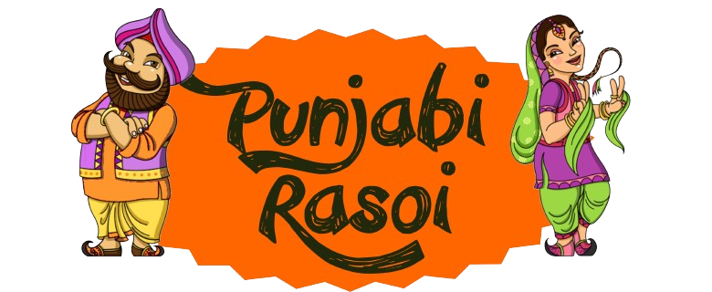
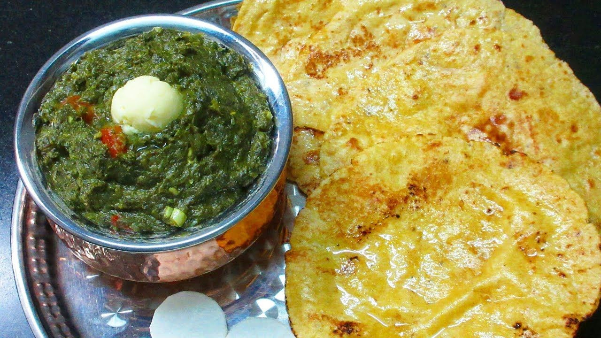
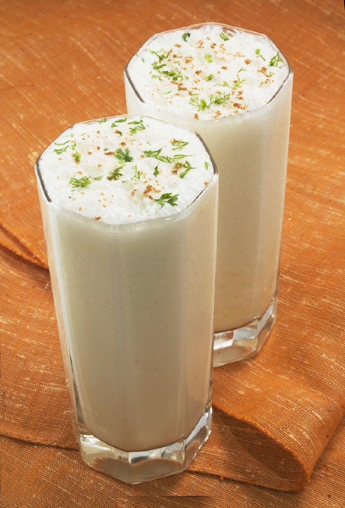
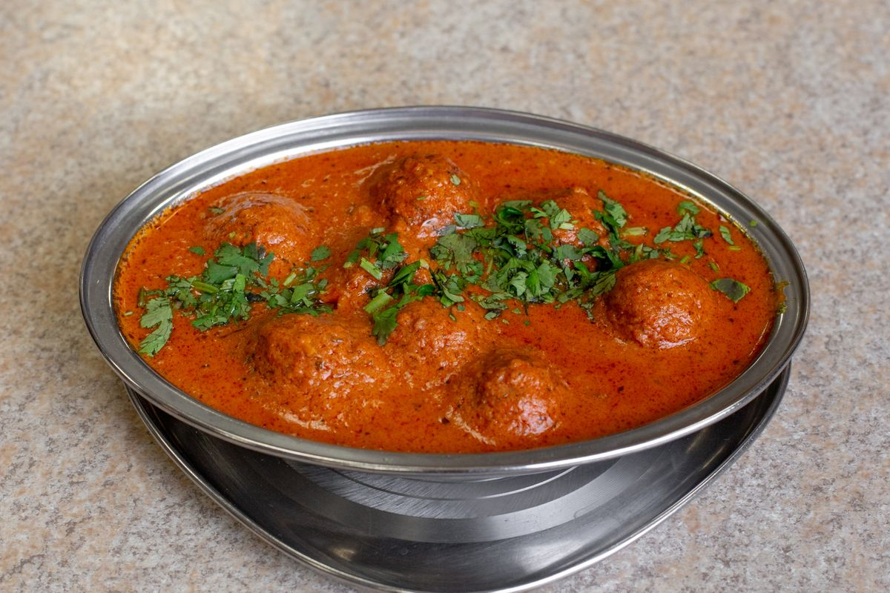
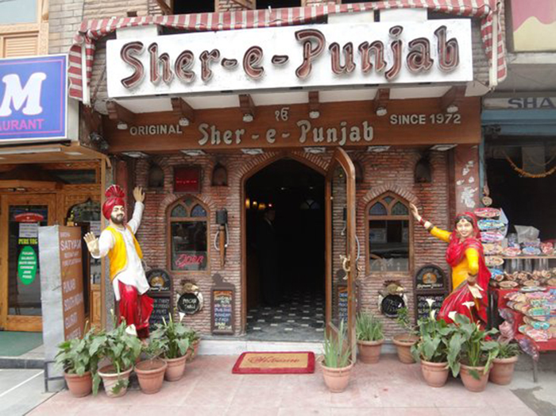

Taste of Punjab
-  Saag & Makki Roti
-
 Allu Parntha
Allu Parntha -  Lassi
-  Malai Kofta
Gallery
A dhaba is a roadside restaurant in the Indian subcontinent, primarily across Pakistan and India. They are on highways, generally serve local cuisine, and also serve as truck stops. They are most commonly found next to petrol stations, and most are open 24 hours a day. Dhabas are a common feature on national and state highways. Earlier frequented only by truck drivers, today eating at a dhaba, whether urban or roadside, is a trend.